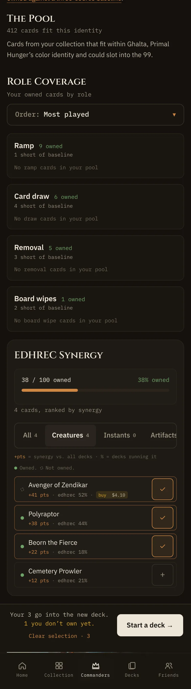
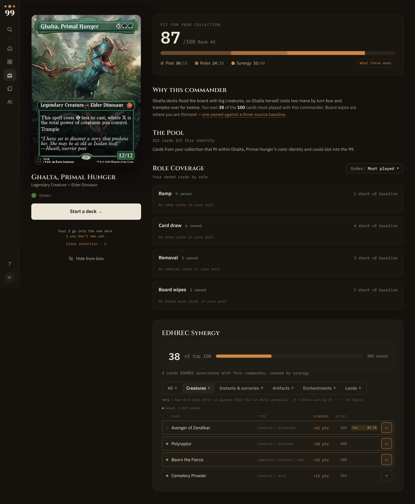
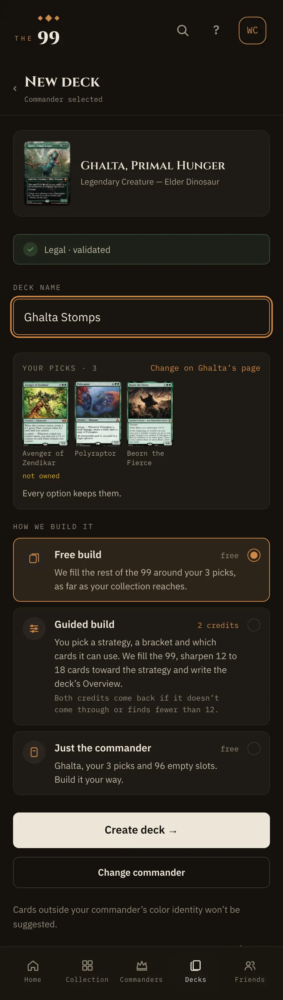
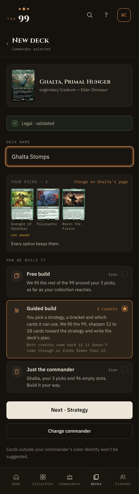
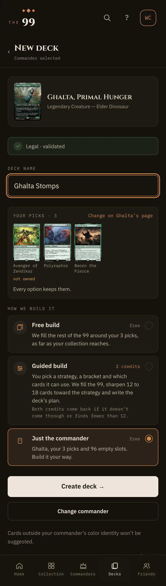
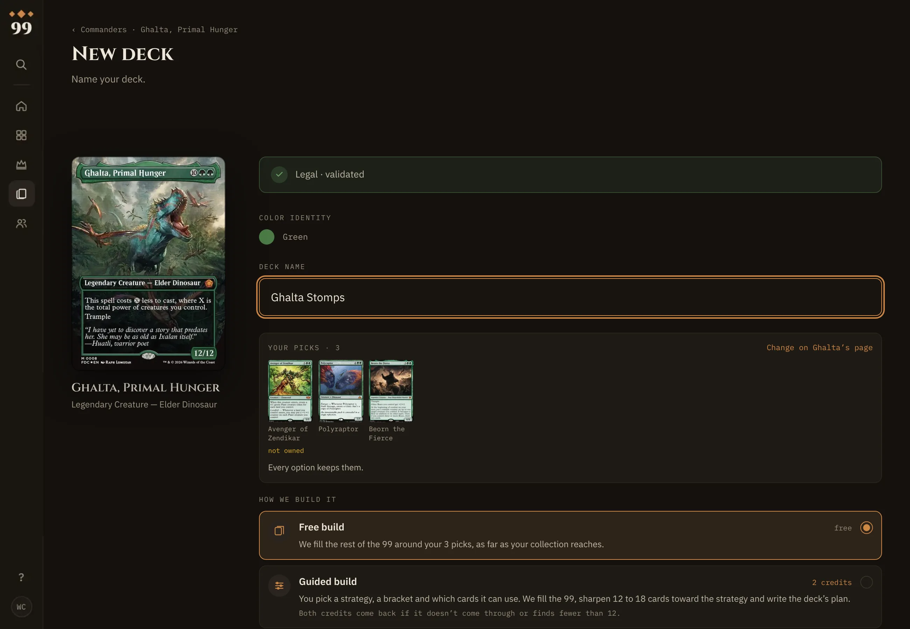

Role Coverage and EDHREC Synergy stay as shipped, with the + picks. The line under the button now says where the picks go, not how the rest is built. The new-deck screen shows the picks above the three options, and each option keeps them. Fixture: Avenger of Zendikar (not owned), Polyraptor and Beorn the Fierce.
The commander page with 3 picks

The picks are ticked in EDHREC Synergy. The bar reads Your 3 go into the new deck., the shipped not-owned line and Clear selection, then Start a deck →.

The same line under Start a deck →. Role Coverage and EDHREC Synergy are unchanged.
The new-deck screen with the picks carried

Your picks · 3 shows the cards at card shape, each one opening card details. A card you don't own says so. Change on Ghalta’s page goes back with the picks kept. Free fills the rest of the 99 around them.

Guided keeps them too: the Cards step lists them under It keeps (board G4), and the run never cuts them.

Ghalta, the 3 picks and 96 empty slots.

The picks box sits in the form column above How we build it.
After the deck is made, every option opens the shipped deck page, where cards are added and cleared by hand as today.